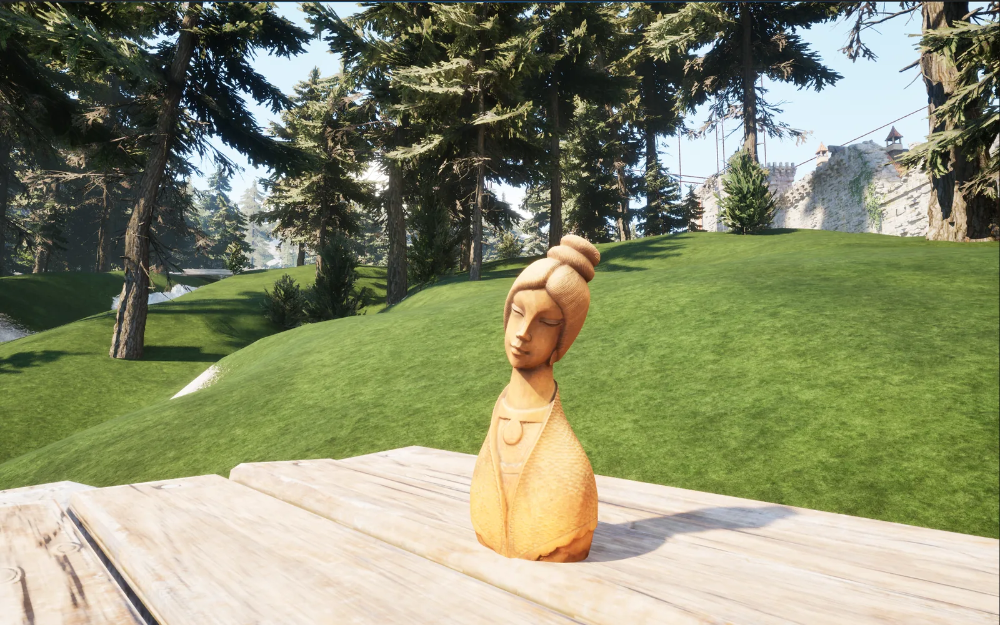
Serene Statue
Photogrammetry · Nikon P510 → RealityScan → Blender → Unreal Engine 5
At a Glance
A carved wooden bust that I photographed, rebuilt as a 3D model, cleaned up in Blender, and brought into Unreal Engine 5 as a Nanite mesh. This was a weekend project to learn the whole pipeline, from camera to engine.
Capture
I took close to 100 photos with a Nikon P510 in my greenhouse, where the plastic walls give soft, even light on overcast days. The statue sat on a turntable, and I shot three rings at different heights, turning it a little between each photo.
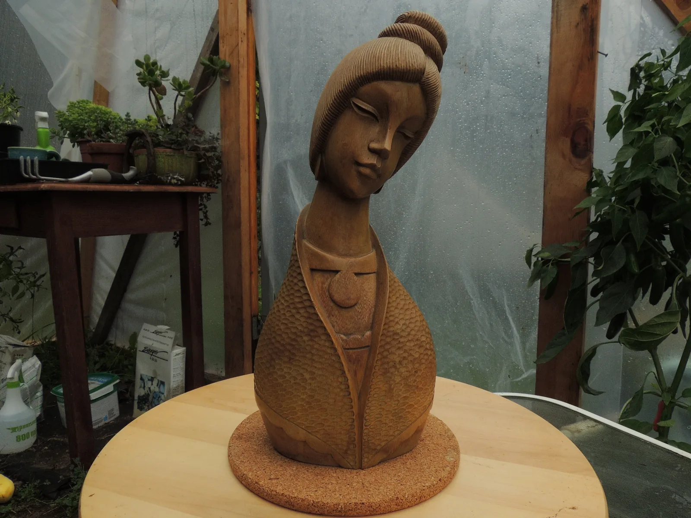
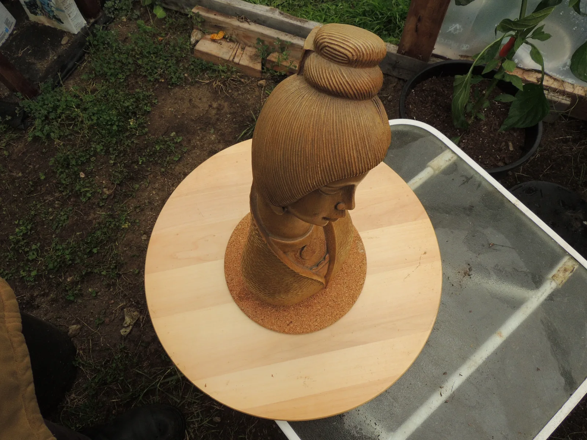
RealityScan
My first try wouldn't align. All the photos were taken from fixed positions and without the background spinning, RealityScan was unable to make any sense of the data. Masking out the background with the built-in AI masking tool managed to save my work and give me a useable scan.
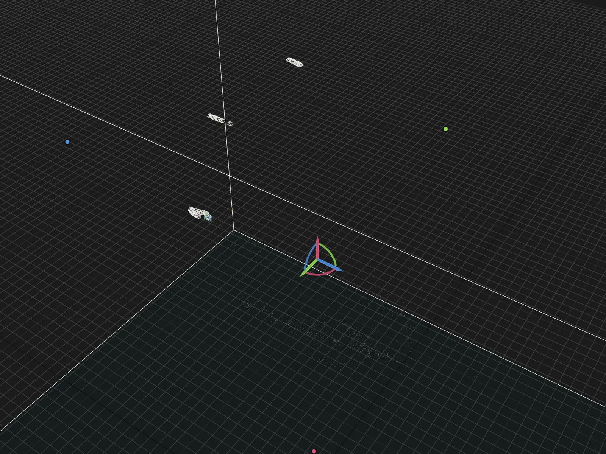
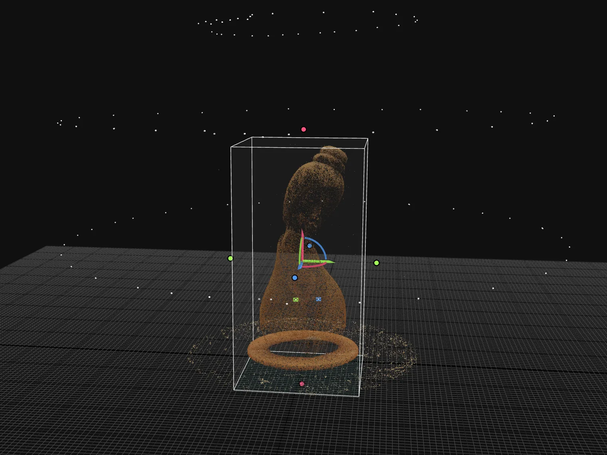
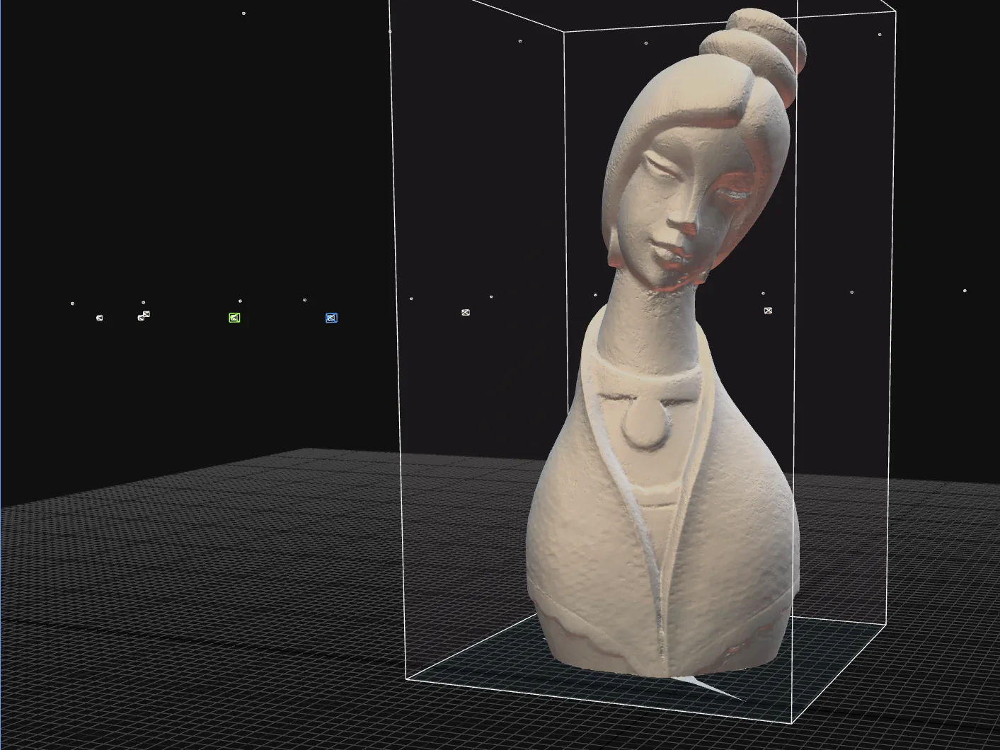
Triangles and Nanite
The raw scan came out at about 2 million triangles: tons of detail and heavy. I simplified it to about 1 million, which kept the silhouette and the carved detail. The next steps will be baking the high-poly detail into a lighter version to further optimize the mesh.
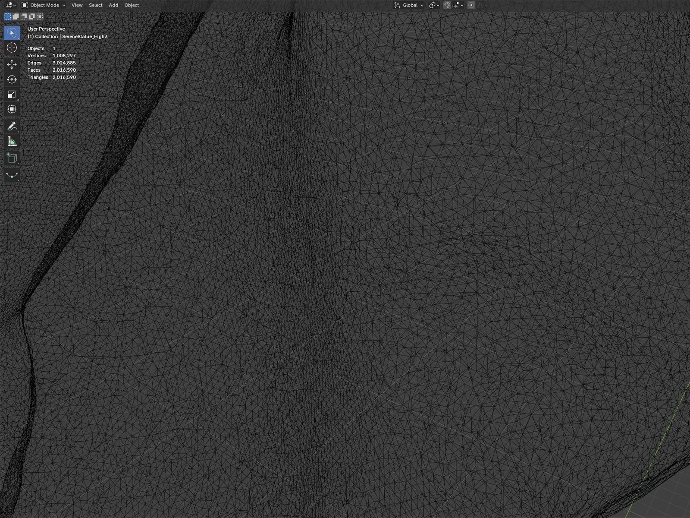
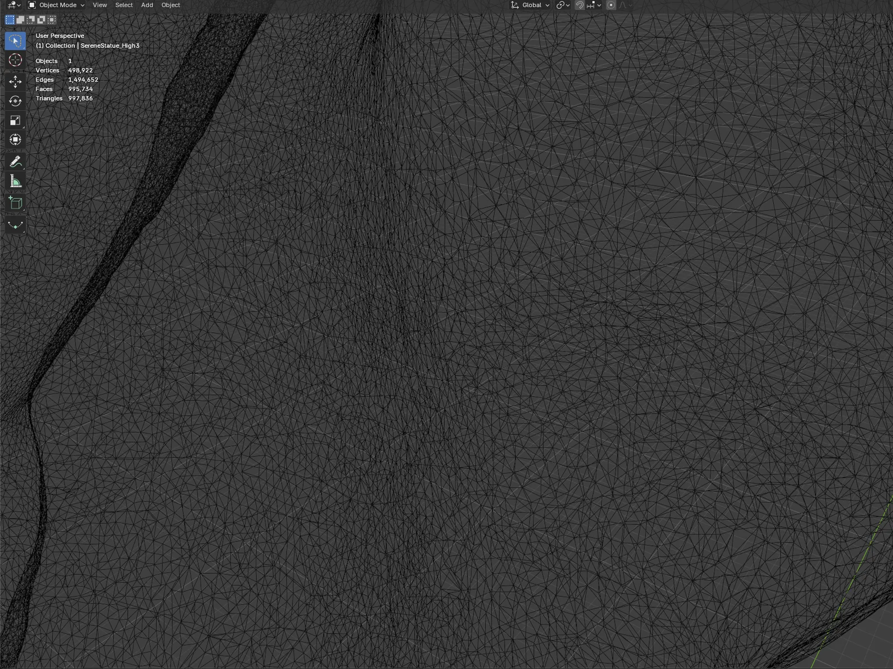
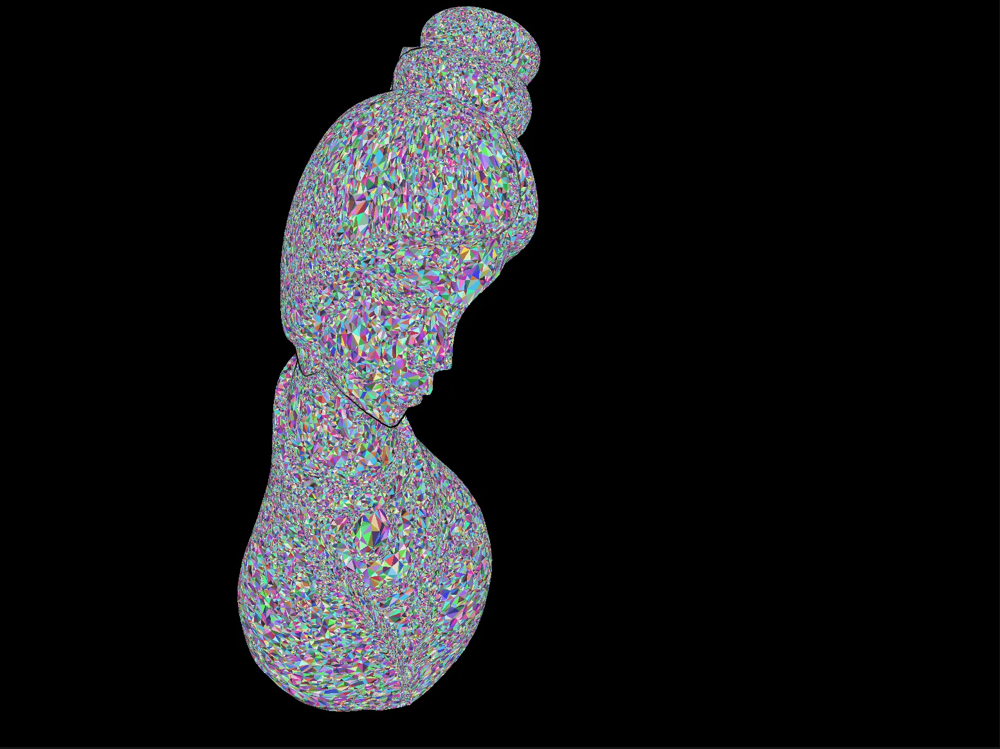
Cleanup in RealityScan and Blender
The raw scan included the cork base the statue sat on, so I did the first cleanup in RealityScan and removed the cork. That still left an uneven sliver under the base. In Blender I used Bisect with Clear Inner and Fill to cut the bottom flat and close it, moved the origin to the bottom so it sits properly on surfaces in engine, and exported it as an FBX.
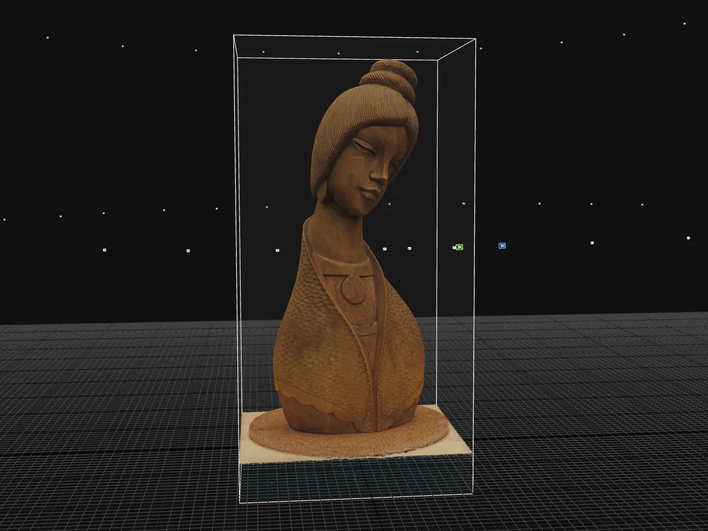
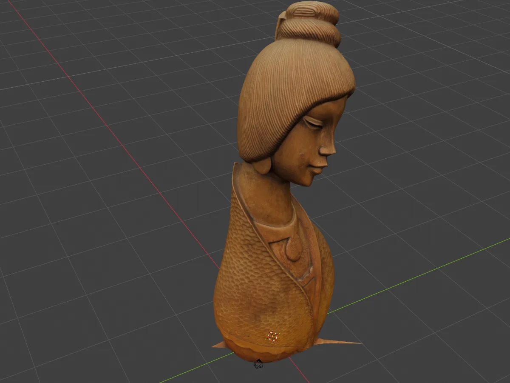
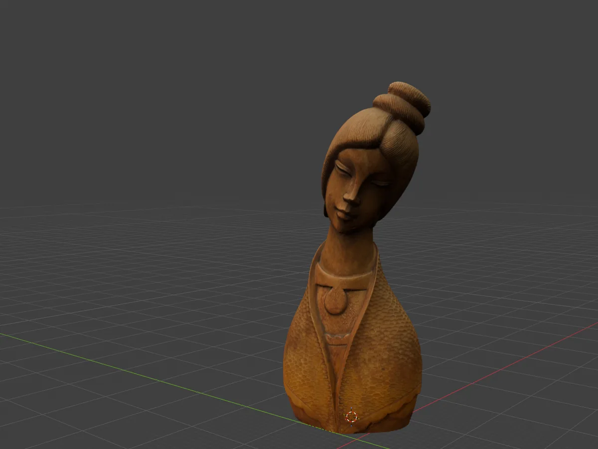
In Unreal Engine
I imported the FBX with Nanite turned on and placed the statue in my scenes to see how it holds up next to other assets and lighting. The statue is the only asset of mine in these scenes; everything else is from Fab.
What I'd Do Differently
- Add an even lower ring of photos, under the chin, to pick up the underside.
- Put a plain backdrop behind the turntable, so there's less background for the software to sort out.
- Get closer, so the statue fills more of each frame and every photo carries more detail.